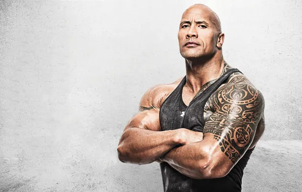

Johnny Depp:-
_2_cropped (1).jpg)
Born : John Christopher Depp II
June 9, 1963 (age 61)
Owensboro, Kentucky, U.S.
Click Here To Know
John Christopher Depp II (born June 9, 1963) is an American actor and musician. He is the recipient of multiple accolades, including a Golden Globe Award as well as nominations for three Academy Awards and two BAFTA awards. His films, in which he has often played eccentric characters, have grossed over $8 billion worldwide, making him one of Hollywood's most bankable stars.[1][2][3][4]
Dwayne Johnson:-

Born Dwayne Douglas Johnson
May 2, 1972 (age 52)
Hayward, California, U.S.
Click Here To Know
Dwayne Douglas Johnson (born May 2, 1972), also known by his ring name The Rock, is an American actor, professional wrestler, and businessman. He is signed to WWE, where he performs on a part-time basis. Widely regarded as one of the greatest professional wrestlers of all time,[6][7] Johnson was integral to the development and success of the World Wrestling Federation (WWF, now WWE) during the Attitude Era. He wrestled for the WWF full-time for eight years before pursuing an acting career.